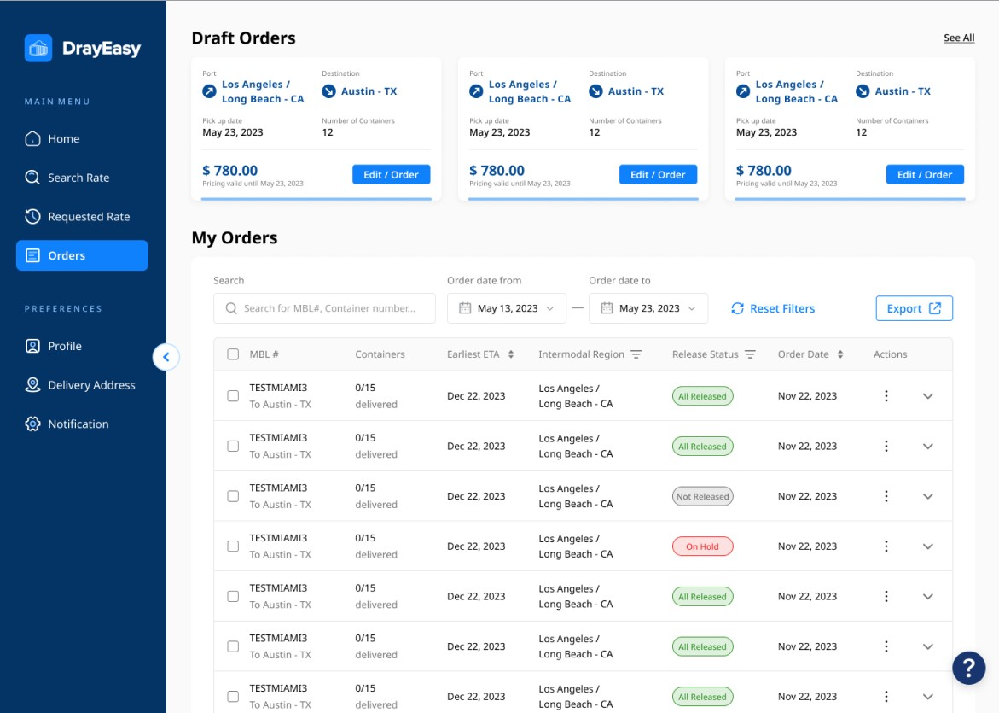
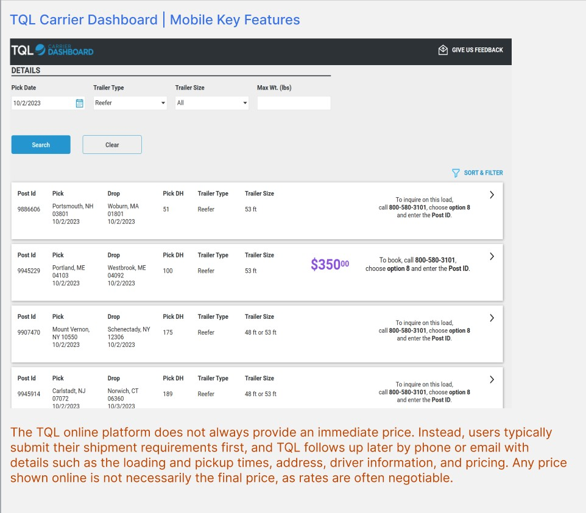
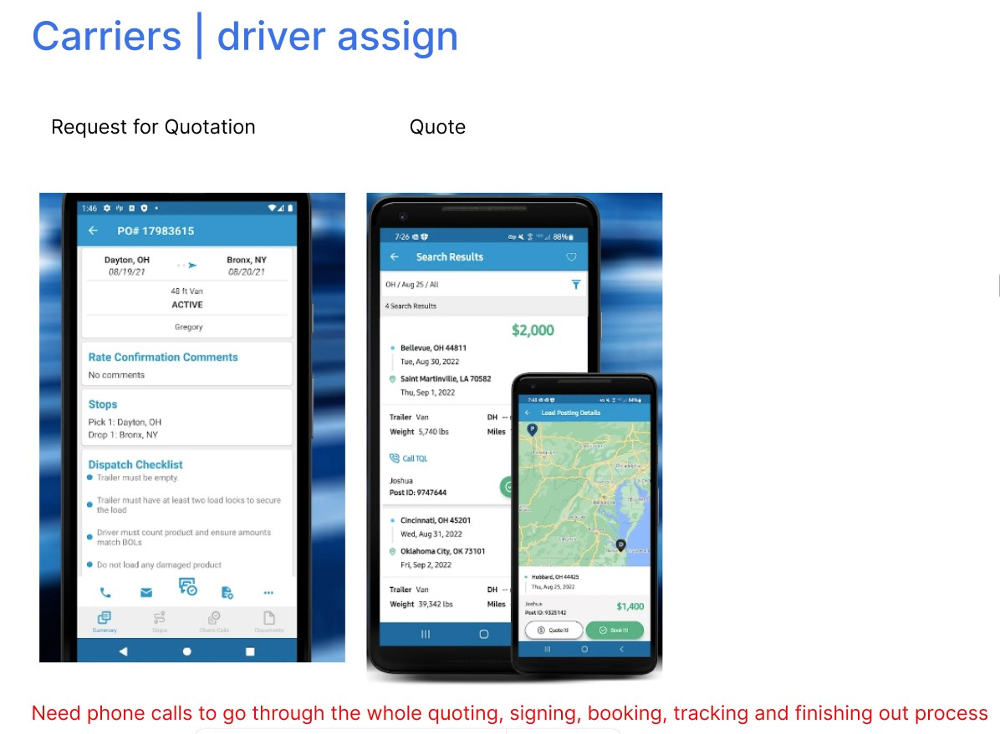
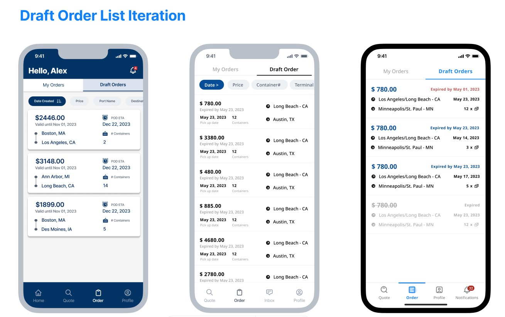
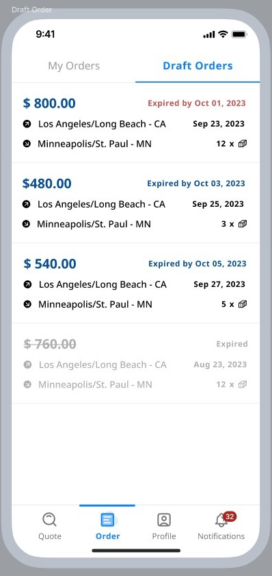
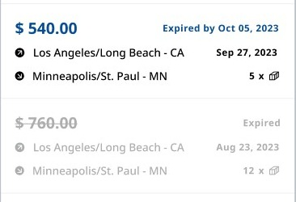
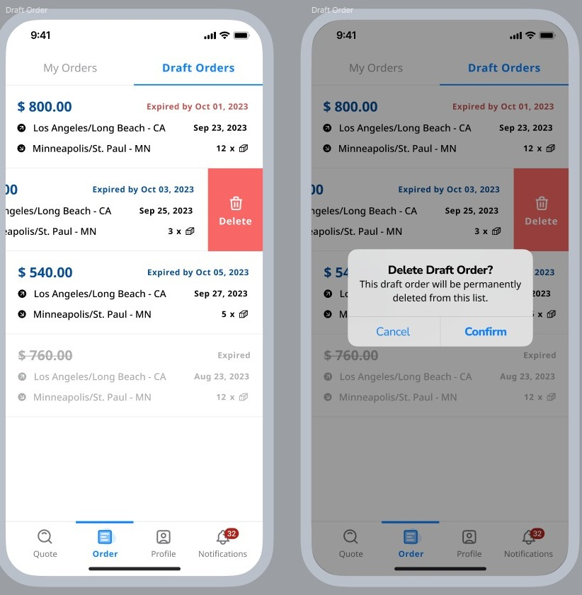

Provided by the client
- An existing Web MVP as reference
- Research material for the broader freight product
- Weekly access to a back-end and a full-stack engineer
- A desktop Draft Order concept assumed to belong on mobile
Translating a desktop Draft Order view into a mobile list that stayed useful before the tap.
DrayEasy already had a desktop Web MVP. The mobile product did not exist, so the design team divided the experience by page. My assigned slice was Draft Orders: the list and card hierarchy, a detail view, and swipe-left deletion with confirmation.
The assignment was a focused mobile translation, not the full freight journey. Quote creation, shipping and customs variables, and order tracking belonged elsewhere.

TQL’s mobile dashboard took shipment requirements and followed up by phone or email with times, addresses, driver and price. Any figure shown online was negotiable rather than final — the gap DrayEasy’s standardised instant rates were built to close.

Quoting, signing, booking, tracking and closing out a load each dropped back to a call. Reading those chains was how the group decided what a phone screen has to hold on its own, with no DrayEasy mobile product to compare against.


Price became the largest element because route alone could not distinguish multiple quotes for the same origin and destination. Created time, route and container quantity stayed on the card; the longer charge breakdown moved to details.

The design used active, approaching-expiry and expired states. Expiry did not rely on color alone: the expired card was muted, the invalid price was struck through and the actionable deadline was replaced by the word “Expired.”

Swipe left revealed delete without completing it. A second confirmation step protected the record from accidental removal and made the consequence explicit.

I can help identify what survives the move, what needs a new hierarchy and what should be questioned before it is built.